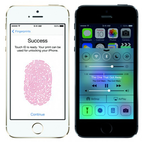
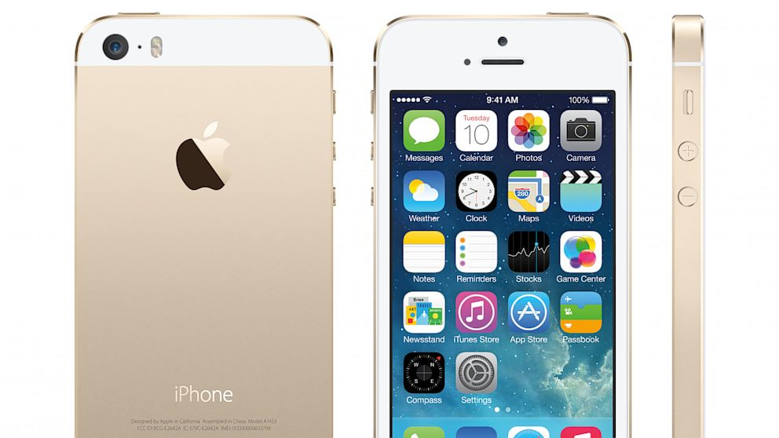

|
Es una empresa multinacional estadounidense con sede en Cupertino, California, y una pequeña sede en Dublín, Irlanda que diseña y produce equipos electrónicos y software. Entre los productos de hardware más conocidos de la empresa se cuenta con equipos Macintosh, el iPod, el iPhone y el iPad.
|
iPhone
iPhone es una línea de teléfonos inteligentes diseñado y comercializado por Apple Inc. Ejecuta el sistema operativo móvil iOS, antes conocido como "iPhone OS" hasta mediados de 2010.
iPhone5s
El nuevo iPhone 5s, incorpora muchas y mejores características, como el nuevo sensor Touch ID, la cámara iSight completamente rediseñada, el nuevo chip A7 y M7. Además está disponible en tres colores: gris espacial, plateado y dorado. Algunas de las características del iPhone 5s son: Pantalla Retina de 4 pulgadas Cámara iSight de 8 megapíxels con flash TrueTrone, grabación a cámara lenta (120fps), modo ráfaga de 10 fotos por segundo y foto panorámica. iOS 7 - Actualizable desde el mismo iPhone o desde iTunes en PC o Mac. System-on-a-chip (SOC) A7 de Apple y coprocesador de movimiento M7, Disponible en 16GB, 32GB y 64GB y colores nuevos, Touch ID (Sensor de huellas dactilares)
.jpg) |
 |  |